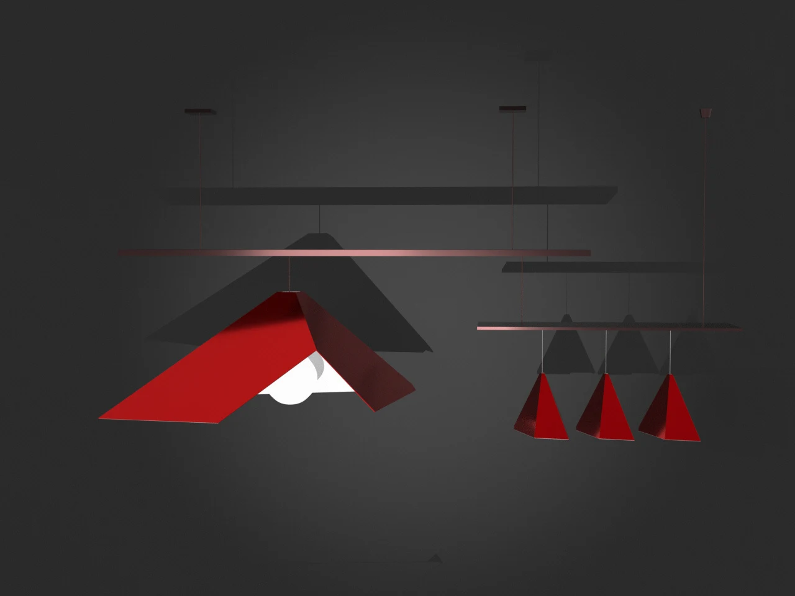
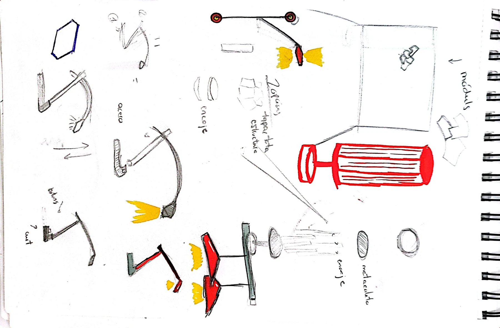
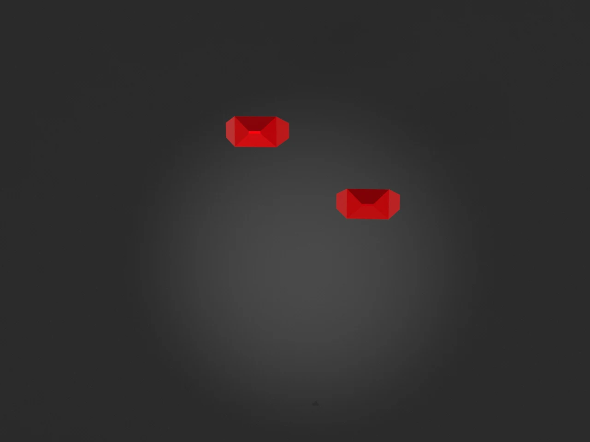
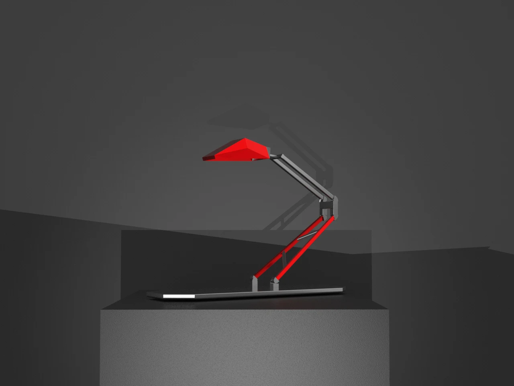
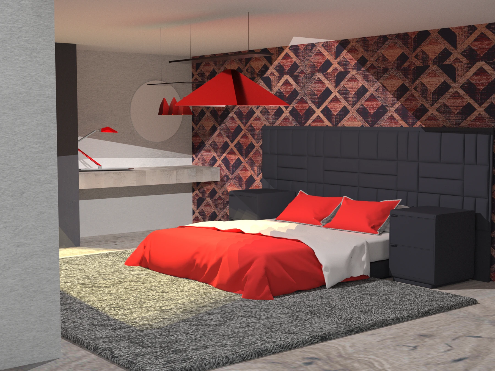

Diseño de producto
Luminarias 2046
Una familia de tres luminarias que explora la relación entre forma, emoción y tecnología. La estética retrofuturista de la película 2046 de Wong Kar-wai inspira una lámpara de techo, un aplique de pared y una lámpara de mesa.









